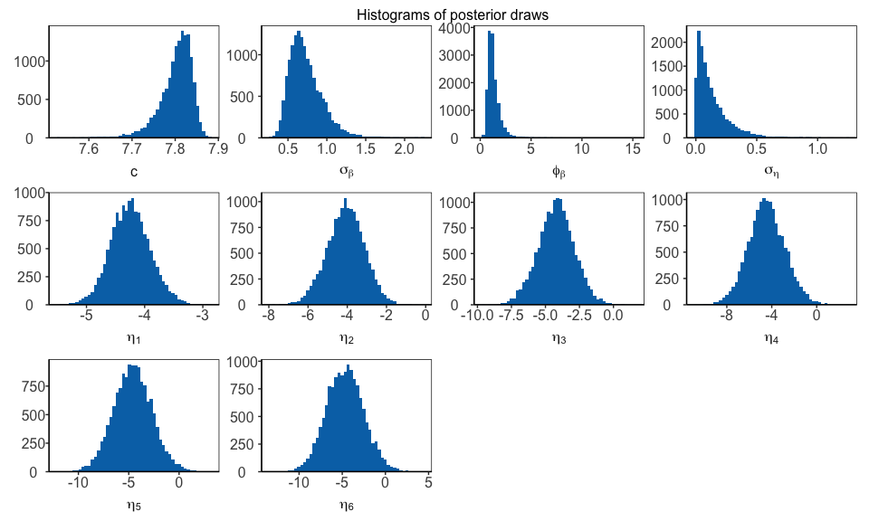

Introduction
Sölvi Rögnvaldsson, Axel Örn Jansson, Rafael Vias and Birgir Hrafnkelsson
Source:vignettes/introduction.Rmd
introduction.RmdA discharge rating curve is a model that describes the relationship between water stage and discharge in a river. The rating curve is estimated from paired observations of stage and discharge and it is used to predict discharge for a given stage. This is the main practical usage of rating curves as stage is substantially easier to directly observe than discharge. Four different discharge rating curve models are implemented in this R package using a Bayesian hierarchical model:
plm0() - Power-law model with a constant variance (hence the 0). This is a Bayesian hierarchical implementation of the most commonly used discharge rating curve model in hydrological practice.
plm() - Power-law model with variance that varies with stage.
gplm0() - Generalized power-law model with a constant variance (hence the 0). The generalized power-law is introduced in Hrafnkelsson et al. (2020).
gplm() - Generalized power-law model with variance that varies with stage. The generalized power-law is introduced in Hrafnkelsson et al. (2020).
For further details about the different models, see Hrafnkelsson et al. (2020). The models differ in their complexity and gplm is the most flexible and complex model. We will focus on the use of gplm throughout this introduction vignette and explore the different ways to fit the gplm and visualize its output. However the API of the functions for the other three models are completely identical so this vignette also helps users to run those models.
We will use a dataset from a stream gauging station called Krokfors in Sweden that comes with the package:
> data(krokfors)
> krokfors
#> W Q
#> 1 9.478000 10.8211700
#> 2 8.698000 1.5010000
#> 3 9.009000 3.3190000
#> 4 8.097000 0.1595700
#> 5 9.104000 4.5462500
#> 6 8.133774 0.2121178
#> 7 8.569583 1.1580000
#> 8 9.139151 4.8110000
#> 9 9.464250 10.9960000
#> 10 8.009214 0.0984130
#> 11 8.961843 2.7847910
#> 12 8.316000 0.6631890
#> 13 8.828716 1.8911800
#> 14 9.897000 20.2600000
#> 15 7.896000 0.0190000
#> 16 9.534000 12.1000000
#> 17 9.114000 4.3560000
#> 18 8.389000 0.6200000
#> 19 8.999000 2.6800000
#> 20 9.099000 3.7310000
#> 21 8.502000 0.8930000
#> 22 8.873000 1.9000000
#> 23 8.240000 0.3200000
#> 24 9.219000 5.9000000
#> 25 9.271000 6.9000000
#> 26 8.370000 0.4420000
#> 27 9.431000 9.0000000Fitting a discharge rating curve
It is very simple to fit a discharge rating curve with the bdrc package. All you need are two mandatory input arguments, formula and argument. The formula is of the form y~x where y is discharge in m\(^3/\)s and x is stage in m (it is very important that the data is in the correct units). The data argument must be a data.frame including x and y as column names. In our case, in Krokfors, a column named Q includes discharge measurements and W the stage measurements. We are ready to fit a discharge rating curve using the gplm function:
gplm returns an object of class “gplm” which we can summarize and visualize using familiar functions such as
> summary(gplm.fit)
#>
#> Formula:
#> Q ~ W
#> Latent parameters:
#> lower-2.5% median-50% upper-97.5%
#> a 1.50 1.94 2.24
#> b 1.83 1.84 1.84
#>
#> Hyperparameters:
#> lower-2.5% median-50% upper-97.5%
#> c 7.71175 7.8101 7.856
#> sigma_beta 0.42197 0.6991 1.245
#> phi_beta 0.56194 1.1719 2.954
#> sigma_eta 0.00354 0.0885 0.502
#> eta_1 -4.89294 -4.2512 -3.534
#> eta_2 -5.95582 -4.0431 -2.217
#> eta_3 -6.86459 -4.1998 -1.607
#> eta_4 -7.64267 -4.4614 -1.213
#> eta_5 -8.33167 -4.6416 -0.772
#> eta_6 -8.77328 -4.5860 -0.302
#>
#> DIC: -1.342327and

In the next section we will dive deeper into visualizing the “gplm” object.
Visualizing posterior distributions of different parameters
The bdrc package provides several tools to visualize the results from model objects which can give insight into the physical properties of the river at hand. For instance, the hyperparameter \(c\) corresponds to the stage of zero discharge. To visualize the posterior of \(c\), we can write
 Technically, instead of inferring \(c\) directly, \(h_{min}-c\) is inferred where \(h_{min}\) is the lowest stage value in the data. Since \(h_{min}-c\) is strictly positive, it is transformed during Bayesian inference s.t. it has support on the real line with \(\zeta=log(h_{min}-c)\). To plot the transformed posterior we write
Technically, instead of inferring \(c\) directly, \(h_{min}-c\) is inferred where \(h_{min}\) is the lowest stage value in the data. Since \(h_{min}-c\) is strictly positive, it is transformed during Bayesian inference s.t. it has support on the real line with \(\zeta=log(h_{min}-c)\). To plot the transformed posterior we write
 the param argument can also be a vector of different parameter names. To visualize the posterior distribution of many parameters at once we can for instance write
the param argument can also be a vector of different parameter names. To visualize the posterior distribution of many parameters at once we can for instance write
 There is a shorthand to visualize all hyperparameters at once
There is a shorthand to visualize all hyperparameters at once
 Similairily, writing ‘latent_parameters’ plots the latent parameters in one plot. To plot the hyperparameters transformed, on the same scale as in the Bayesian inference, we write
Similairily, writing ‘latent_parameters’ plots the latent parameters in one plot. To plot the hyperparameters transformed, on the same scale as in the Bayesian inference, we write

Finally, we can visualize certain components of the model that varies with stage, the power-law exponent, \(f(h)\), and the standard deviation on the data level \(\sigma_{\varepsilon}(h)\). gplm0 and gplm generalize the power law exponent, model it as a stochastic process,\(f(h)=b+\beta(h)\), which assumed to be twice differentiable.plm and plm0 on the other hand model the exponent as a fixed constant \(f(h)=b\). We can plot the inferred power-law exponent with
plm and gplm model the standard deviation, \(\sigma_{\varepsilon}\) on the data level as a function of stage, namely using B-splines basis functions, while plm0 and gplm0 model the variance is a fixed constant. We can plot the standard deviation by writing

Assessing model fitness and convergence
The package has several functions for convergence diagnostics of a bdrc model, most notably the residual plot, tracing plots, autocorrelation plot and the Gelman-Rubin statistic plot. The log-residuals can be plotted with
 The log-residuals are calculated by subtracting the posterior estimate of log-discharge,\(log(\hat{Q})\), from the observed log-discharge. Additionally, the plot includes the 95% predictive intervals for log(Q) (- -) and 95% credible intervals for the expected value of log(Q) (—), reflecting the rating curve uncertainty.
The log-residuals are calculated by subtracting the posterior estimate of log-discharge,\(log(\hat{Q})\), from the observed log-discharge. Additionally, the plot includes the 95% predictive intervals for log(Q) (- -) and 95% credible intervals for the expected value of log(Q) (—), reflecting the rating curve uncertainty.

To plot a trace plot for all hyperparameters, you write similiarily as above

To assess the mixing and convergence of the MCMC chains for each parameter, you can visualize \(\hat{R}\) as presented by Gelman and Rubin with:
 And finally autocorrelation of parameters can be assessed with
And finally autocorrelation of parameters can be assessed with

Customization of models
There are ways to customize the gplm further. In some instances, the parameter of zero discharge, \(c\), is known and then you want to fix that parameter to the known value in the model. In addition you might want to extrapolate the rating curve to higher stage values by adjusting the maximum stage. Assume 7.65 m is the known value of \(c\) and you want to calculate the rating curve for stage values up to 10 m, then your function call would look like this
> gplm.fit.known_c <- gplm(Q~W,krokfors,c_param=7.65,h_max=10)
> summary(gplm.fit.known_c)
#>
#> Formula:
#> Q ~ W
#> Latent parameters:
#> lower-2.5% median-50% upper-97.5%
#> a 1.16 1.30 1.46
#> b 1.83 1.84 1.84
#>
#> Hyperparameters:
#> lower-2.5% median-50% upper-97.5%
#> sigma_beta 0.54925 0.8717 1.463
#> phi_beta 0.44462 0.9083 2.114
#> sigma_eta 0.00407 0.0991 0.551
#> eta_1 -4.77057 -4.1300 -3.303
#> eta_2 -5.99193 -4.0828 -2.271
#> eta_3 -6.97003 -4.3655 -1.754
#> eta_4 -7.86817 -4.7731 -1.428
#> eta_5 -8.62289 -4.9532 -0.975
#> eta_6 -9.11199 -4.9385 -0.473
#>
#> DIC: -0.2339229one neat way to get a visualization summary of your model is to use the ‘panel’ option in the plot method:

Prediction for an equally spaced grid of stages
To get rating curve predictions for an equally spaced grid of stage values, you can use the predict function. Note that only values in the range from \(c\) and h_max are accepted, as that is the range in which Bayesian inference was performed
> h_grid <- seq(7.65,10,by=0.01)
> rating_curve_h_grid <- predict(gplm.fit.known_c,newdata=h_grid)
> print(rating_curve_h_grid)
#> h lower median upper
#> 1 7.65 0.000000e+00 0.000000e+00 0.000000e+00
#> 2 7.66 4.923996e-06 2.334404e-05 9.764905e-05
#> 3 7.67 9.847992e-06 4.668808e-05 1.952981e-04
#> 4 7.68 1.477199e-05 7.003213e-05 2.929472e-04
#> 5 7.69 1.969598e-05 9.337617e-05 3.905962e-04
#> 6 7.70 2.461998e-05 1.167202e-04 4.882453e-04
#> 7 7.71 1.011790e-04 3.129098e-04 9.497794e-04
#> 8 7.72 1.777381e-04 5.090994e-04 1.411314e-03
#> 9 7.73 2.542971e-04 7.052890e-04 1.872848e-03
#> 10 7.74 3.308562e-04 9.014786e-04 2.334382e-03
#> 11 7.75 4.074153e-04 1.097668e-03 2.795916e-03
#> 12 7.76 7.648720e-04 1.711566e-03 3.872344e-03
#> 13 7.77 1.122329e-03 2.325464e-03 4.948771e-03
#> 14 7.78 1.479786e-03 2.939362e-03 6.025199e-03
#> 15 7.79 1.837242e-03 3.553260e-03 7.101626e-03
#> 16 7.80 2.194699e-03 4.167158e-03 8.178053e-03
#> 17 7.81 3.166456e-03 5.524221e-03 1.013587e-02
#> 18 7.82 4.138213e-03 6.881285e-03 1.209368e-02
#> 19 7.83 5.109970e-03 8.238349e-03 1.405150e-02
#> 20 7.84 6.081728e-03 9.595412e-03 1.600931e-02
#> 21 7.85 7.053485e-03 1.095248e-02 1.796712e-02
#> 22 7.86 8.954223e-03 1.341936e-02 2.127238e-02
#> 23 7.87 1.085496e-02 1.588625e-02 2.457765e-02
#> 24 7.88 1.275570e-02 1.835314e-02 2.788291e-02
#> 25 7.89 1.465644e-02 2.082003e-02 3.118817e-02
#> 26 7.90 1.689126e-02 2.372494e-02 3.497781e-02
#> 27 7.91 1.962720e-02 2.728690e-02 3.949401e-02
#> 28 7.92 2.236313e-02 3.084887e-02 4.401022e-02
#> 29 7.93 2.554110e-02 3.499658e-02 4.942504e-02
#> 30 7.94 2.905300e-02 3.958680e-02 5.551875e-02
#> 31 7.95 3.256490e-02 4.417702e-02 6.161245e-02
#> 32 7.96 3.666599e-02 4.955948e-02 6.843132e-02
#> 33 7.97 4.097486e-02 5.522130e-02 7.550590e-02
#> 34 7.98 4.528373e-02 6.088313e-02 8.258048e-02
#> 35 7.99 5.025776e-02 6.761006e-02 9.148151e-02
#> 36 8.00 5.529842e-02 7.444368e-02 1.005655e-01
#> 37 8.01 6.040145e-02 8.136705e-02 1.097727e-01
#> 38 8.02 6.623565e-02 8.934260e-02 1.204241e-01
#> 39 8.03 7.206986e-02 9.731816e-02 1.310756e-01
#> 40 8.04 7.806700e-02 1.054889e-01 1.418760e-01
#> 41 8.05 8.497034e-02 1.147455e-01 1.535055e-01
#> 42 8.06 9.187368e-02 1.240021e-01 1.651349e-01
#> 43 8.07 9.894249e-02 1.334686e-01 1.772681e-01
#> 44 8.08 1.065774e-01 1.436534e-01 1.911248e-01
#> 45 8.09 1.142123e-01 1.538382e-01 2.049815e-01
#> 46 8.10 1.220830e-01 1.645042e-01 2.194813e-01
#> 47 8.11 1.305042e-01 1.762931e-01 2.354815e-01
#> 48 8.12 1.389254e-01 1.880820e-01 2.514817e-01
#> 49 8.13 1.473466e-01 1.998708e-01 2.674819e-01
#> 50 8.14 1.566491e-01 2.122996e-01 2.832714e-01
#> 51 8.15 1.664860e-01 2.251163e-01 2.989333e-01
#> 52 8.16 1.763228e-01 2.379329e-01 3.145952e-01
#> 53 8.17 1.860423e-01 2.515039e-01 3.322635e-01
#> 54 8.18 1.957579e-01 2.651007e-01 3.500003e-01
#> 55 8.19 2.058421e-01 2.790579e-01 3.686248e-01
#> 56 8.20 2.167418e-01 2.938128e-01 3.892130e-01
#> 57 8.21 2.276415e-01 3.085676e-01 4.098012e-01
#> 58 8.22 2.395295e-01 3.239486e-01 4.299218e-01
#> 59 8.23 2.519364e-01 3.396585e-01 4.497968e-01
#> 60 8.24 2.643433e-01 3.553683e-01 4.696718e-01
#> 61 8.25 2.765574e-01 3.718923e-01 4.911301e-01
#> 62 8.26 2.887714e-01 3.884162e-01 5.125884e-01
#> 63 8.27 3.014191e-01 4.052304e-01 5.348092e-01
#> 64 8.28 3.145622e-01 4.223763e-01 5.579013e-01
#> 65 8.29 3.277054e-01 4.395222e-01 5.809935e-01
#> 66 8.30 3.414536e-01 4.580011e-01 6.029808e-01
#> 67 8.31 3.552450e-01 4.765751e-01 6.248892e-01
#> 68 8.32 3.701884e-01 4.947983e-01 6.484165e-01
#> 69 8.33 3.868600e-01 5.124951e-01 6.743724e-01
#> 70 8.34 4.011597e-01 5.310774e-01 6.992126e-01
#> 71 8.35 4.138782e-01 5.502500e-01 7.233089e-01
#> 72 8.36 4.296503e-01 5.704350e-01 7.512638e-01
#> 73 8.37 4.461857e-01 5.908730e-01 7.801834e-01
#> 74 8.38 4.616522e-01 6.108400e-01 8.062647e-01
#> 75 8.39 4.772306e-01 6.309332e-01 8.324926e-01
#> 76 8.40 4.938157e-01 6.521616e-01 8.600406e-01
#> 77 8.41 5.104007e-01 6.733899e-01 8.875886e-01
#> 78 8.42 5.272385e-01 6.950163e-01 9.153545e-01
#> 79 8.43 5.447424e-01 7.176917e-01 9.436949e-01
#> 80 8.44 5.622462e-01 7.403671e-01 9.720353e-01
#> 81 8.45 5.801013e-01 7.631353e-01 1.000832e+00
#> 82 8.46 5.983858e-01 7.860168e-01 1.030187e+00
#> 83 8.47 6.166702e-01 8.088984e-01 1.059543e+00
#> 84 8.48 6.358083e-01 8.324435e-01 1.091822e+00
#> 85 8.49 6.554587e-01 8.563867e-01 1.125857e+00
#> 86 8.50 6.751091e-01 8.803300e-01 1.159892e+00
#> 87 8.51 6.921394e-01 9.051313e-01 1.192307e+00
#> 88 8.52 7.085146e-01 9.301470e-01 1.224317e+00
#> 89 8.53 7.275629e-01 9.552156e-01 1.257428e+00
#> 90 8.54 7.488227e-01 9.803277e-01 1.291449e+00
#> 91 8.55 7.695324e-01 1.006034e+00 1.326695e+00
#> 92 8.56 7.889240e-01 1.033165e+00 1.364876e+00
#> 93 8.57 8.084319e-01 1.060382e+00 1.402938e+00
#> 94 8.58 8.306136e-01 1.089563e+00 1.438276e+00
#> 95 8.59 8.527952e-01 1.118745e+00 1.473614e+00
#> 96 8.60 8.749768e-01 1.147926e+00 1.508952e+00
#> 97 8.61 8.979887e-01 1.176508e+00 1.549877e+00
#> 98 8.62 9.211691e-01 1.204968e+00 1.591936e+00
#> 99 8.63 9.443495e-01 1.233427e+00 1.633995e+00
#> 100 8.64 9.677682e-01 1.263273e+00 1.675237e+00
#> 101 8.65 9.913323e-01 1.293965e+00 1.715980e+00
#> 102 8.66 1.014896e+00 1.324657e+00 1.756724e+00
#> 103 8.67 1.040370e+00 1.356670e+00 1.799808e+00
#> 104 8.68 1.068586e+00 1.390579e+00 1.846256e+00
#> 105 8.69 1.096801e+00 1.424488e+00 1.892704e+00
#> 106 8.70 1.124413e+00 1.458950e+00 1.938700e+00
#> 107 8.71 1.149609e+00 1.495628e+00 1.982888e+00
#> 108 8.72 1.174805e+00 1.532306e+00 2.027077e+00
#> 109 8.73 1.200000e+00 1.568983e+00 2.071265e+00
#> 110 8.74 1.228929e+00 1.606279e+00 2.126383e+00
#> 111 8.75 1.258130e+00 1.643619e+00 2.182297e+00
#> 112 8.76 1.287330e+00 1.680960e+00 2.238211e+00
#> 113 8.77 1.319803e+00 1.722305e+00 2.296905e+00
#> 114 8.78 1.353930e+00 1.765674e+00 2.357004e+00
#> 115 8.79 1.388057e+00 1.809044e+00 2.417103e+00
#> 116 8.80 1.423884e+00 1.852997e+00 2.477216e+00
#> 117 8.81 1.462299e+00 1.897840e+00 2.537350e+00
#> 118 8.82 1.500714e+00 1.942683e+00 2.597484e+00
#> 119 8.83 1.539106e+00 1.988614e+00 2.658636e+00
#> 120 8.84 1.577341e+00 2.041935e+00 2.726705e+00
#> 121 8.85 1.615576e+00 2.095256e+00 2.794773e+00
#> 122 8.86 1.653811e+00 2.148577e+00 2.862842e+00
#> 123 8.87 1.692046e+00 2.201898e+00 2.930911e+00
#> 124 8.88 1.733648e+00 2.258826e+00 3.005112e+00
#> 125 8.89 1.776694e+00 2.317301e+00 3.081942e+00
#> 126 8.90 1.819740e+00 2.375775e+00 3.158772e+00
#> 127 8.91 1.872803e+00 2.437464e+00 3.238910e+00
#> 128 8.92 1.929412e+00 2.500290e+00 3.320218e+00
#> 129 8.93 1.986021e+00 2.563117e+00 3.401526e+00
#> 130 8.94 2.035286e+00 2.632061e+00 3.488884e+00
#> 131 8.95 2.082444e+00 2.702760e+00 3.577977e+00
#> 132 8.96 2.129603e+00 2.773459e+00 3.667070e+00
#> 133 8.97 2.190478e+00 2.851823e+00 3.765513e+00
#> 134 8.98 2.254453e+00 2.931920e+00 3.866068e+00
#> 135 8.99 2.318427e+00 3.012016e+00 3.966623e+00
#> 136 9.00 2.384132e+00 3.092926e+00 4.067202e+00
#> 137 9.01 2.464193e+00 3.181224e+00 4.170294e+00
#> 138 9.02 2.533252e+00 3.270127e+00 4.294097e+00
#> 139 9.03 2.602311e+00 3.359030e+00 4.417899e+00
#> 140 9.04 2.671419e+00 3.449313e+00 4.540756e+00
#> 141 9.05 2.740974e+00 3.552022e+00 4.655104e+00
#> 142 9.06 2.810529e+00 3.654732e+00 4.769452e+00
#> 143 9.07 2.882241e+00 3.757728e+00 4.887039e+00
#> 144 9.08 2.973370e+00 3.863300e+00 5.033786e+00
#> 145 9.09 3.064498e+00 3.968873e+00 5.180533e+00
#> 146 9.10 3.155822e+00 4.078275e+00 5.324959e+00
#> 147 9.11 3.262567e+00 4.200095e+00 5.445094e+00
#> 148 9.12 3.358192e+00 4.316951e+00 5.606948e+00
#> 149 9.13 3.440328e+00 4.440290e+00 5.798125e+00
#> 150 9.14 3.523624e+00 4.564704e+00 5.984691e+00
#> 151 9.15 3.619420e+00 4.700704e+00 6.121554e+00
#> 152 9.16 3.715216e+00 4.836704e+00 6.258416e+00
#> 153 9.17 3.818041e+00 4.972488e+00 6.416069e+00
#> 154 9.18 3.930445e+00 5.107977e+00 6.602053e+00
#> 155 9.19 4.042848e+00 5.243467e+00 6.788036e+00
#> 156 9.20 4.160136e+00 5.393793e+00 6.985757e+00
#> 157 9.21 4.278952e+00 5.548763e+00 7.187151e+00
#> 158 9.22 4.394736e+00 5.702449e+00 7.388242e+00
#> 159 9.23 4.483237e+00 5.844575e+00 7.586598e+00
#> 160 9.24 4.581371e+00 5.996749e+00 7.794153e+00
#> 161 9.25 4.696146e+00 6.166278e+00 8.017599e+00
#> 162 9.26 4.819110e+00 6.335949e+00 8.233880e+00
#> 163 9.27 4.946816e+00 6.505703e+00 8.446013e+00
#> 164 9.28 5.068194e+00 6.679098e+00 8.663210e+00
#> 165 9.29 5.188868e+00 6.852898e+00 8.880970e+00
#> 166 9.30 5.309542e+00 7.026697e+00 9.098730e+00
#> 167 9.31 5.459181e+00 7.210681e+00 9.331913e+00
#> 168 9.32 5.621233e+00 7.399030e+00 9.571705e+00
#> 169 9.33 5.783285e+00 7.587378e+00 9.811497e+00
#> 170 9.34 5.933430e+00 7.778568e+00 1.006497e+01
#> 171 9.35 6.071667e+00 7.972597e+00 1.033212e+01
#> 172 9.36 6.209904e+00 8.166627e+00 1.059927e+01
#> 173 9.37 6.349779e+00 8.362621e+00 1.086411e+01
#> 174 9.38 6.493474e+00 8.563196e+00 1.112353e+01
#> 175 9.39 6.637169e+00 8.763771e+00 1.138295e+01
#> 176 9.40 6.782663e+00 8.966301e+00 1.164716e+01
#> 177 9.41 6.944346e+00 9.186426e+00 1.195446e+01
#> 178 9.42 7.106029e+00 9.406550e+00 1.226176e+01
#> 179 9.43 7.267712e+00 9.626675e+00 1.256906e+01
#> 180 9.44 7.429787e+00 9.833905e+00 1.286261e+01
#> 181 9.45 7.591905e+00 1.003970e+01 1.315464e+01
#> 182 9.46 7.754024e+00 1.024550e+01 1.344666e+01
#> 183 9.47 7.918794e+00 1.046849e+01 1.364593e+01
#> 184 9.48 8.088827e+00 1.070321e+01 1.382664e+01
#> 185 9.49 8.272067e+00 1.093399e+01 1.420730e+01
#> 186 9.50 8.455633e+00 1.116506e+01 1.457254e+01
#> 187 9.51 8.639851e+00 1.139670e+01 1.490696e+01
#> 188 9.52 8.789432e+00 1.162695e+01 1.522358e+01
#> 189 9.53 8.899430e+00 1.185560e+01 1.551986e+01
#> 190 9.54 9.041013e+00 1.209213e+01 1.584693e+01
#> 191 9.55 9.203653e+00 1.233392e+01 1.619452e+01
#> 192 9.56 9.366294e+00 1.257571e+01 1.654211e+01
#> 193 9.57 9.528934e+00 1.281749e+01 1.688970e+01
#> 194 9.58 9.696777e+00 1.306517e+01 1.724883e+01
#> 195 9.59 9.868597e+00 1.331734e+01 1.761677e+01
#> 196 9.60 1.004042e+01 1.356951e+01 1.798471e+01
#> 197 9.61 1.021224e+01 1.382168e+01 1.835266e+01
#> 198 9.62 1.038154e+01 1.406246e+01 1.871844e+01
#> 199 9.63 1.054865e+01 1.429328e+01 1.908232e+01
#> 200 9.64 1.071576e+01 1.452410e+01 1.944621e+01
#> 201 9.65 1.088287e+01 1.475492e+01 1.981010e+01
#> 202 9.66 1.103957e+01 1.499140e+01 2.017199e+01
#> 203 9.67 1.118587e+01 1.523354e+01 2.053189e+01
#> 204 9.68 1.133217e+01 1.547567e+01 2.089179e+01
#> 205 9.69 1.147847e+01 1.571781e+01 2.125170e+01
#> 206 9.70 1.163118e+01 1.595640e+01 2.160694e+01
#> 207 9.71 1.179123e+01 1.619094e+01 2.195687e+01
#> 208 9.72 1.195128e+01 1.642547e+01 2.230680e+01
#> 209 9.73 1.211133e+01 1.666001e+01 2.265673e+01
#> 210 9.74 1.226610e+01 1.689084e+01 2.299237e+01
#> 211 9.75 1.241399e+01 1.711683e+01 2.330932e+01
#> 212 9.76 1.256187e+01 1.734282e+01 2.362627e+01
#> 213 9.77 1.270975e+01 1.756881e+01 2.394322e+01
#> 214 9.78 1.285940e+01 1.778947e+01 2.426850e+01
#> 215 9.79 1.301172e+01 1.800215e+01 2.460628e+01
#> 216 9.80 1.316404e+01 1.821483e+01 2.494405e+01
#> 217 9.81 1.331635e+01 1.842750e+01 2.528183e+01
#> 218 9.82 1.345875e+01 1.863711e+01 2.561472e+01
#> 219 9.83 1.358402e+01 1.884140e+01 2.593918e+01
#> 220 9.84 1.370928e+01 1.904569e+01 2.626365e+01
#> 221 9.85 1.383455e+01 1.924998e+01 2.658811e+01
#> 222 9.86 1.394878e+01 1.945025e+01 2.689767e+01
#> 223 9.87 1.404096e+01 1.964246e+01 2.717739e+01
#> 224 9.88 1.413314e+01 1.983468e+01 2.745711e+01
#> 225 9.89 1.422531e+01 2.002690e+01 2.773684e+01
#> 226 9.90 1.431217e+01 2.021767e+01 2.807023e+01
#> 227 9.91 1.438662e+01 2.040505e+01 2.852886e+01
#> 228 9.92 1.446107e+01 2.059243e+01 2.898749e+01
#> 229 9.93 1.451217e+01 2.074459e+01 2.938064e+01
#> 230 9.94 1.455442e+01 2.088340e+01 2.974895e+01
#> 231 9.95 1.457065e+01 2.102365e+01 3.013914e+01
#> 232 9.96 1.443947e+01 2.117215e+01 3.065333e+01
#> 233 9.97 1.430830e+01 2.132064e+01 3.116752e+01
#> 234 9.98 1.421128e+01 2.146728e+01 3.171932e+01
#> 235 9.99 1.413952e+01 2.161254e+01 3.229893e+01
#> 236 10.00 1.406775e+01 2.175780e+01 3.287854e+01